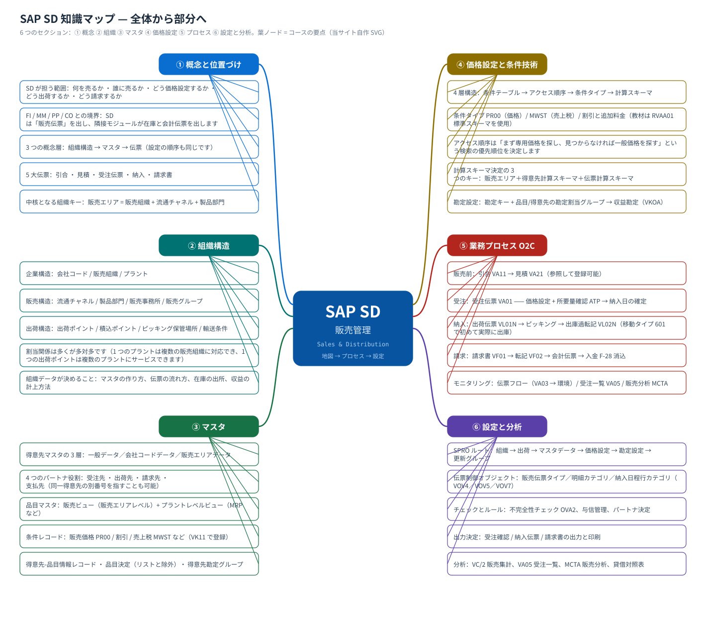

このサイトは中国語版コース sap_cn（SAP SD トレーニングコース）を日本語にしたものです。掲載している画面は原教材 S4.docx の中国語インターフェースの実機スクリーンショットをそのまま使っているため、本文の日本語と画面の中国語が食い違って見える箇所があります。その対応表が用語集（日本語 ⇔ 画面の中国語 ⇔ 英語 / IMG パス対照）です。設定手順（設定）では、各タスクの原文（中国語）を折りたたみで併記しています。
SAP SD トレーニングコース · 販売管理（Sales and Distribution）
1 つの問いから始めます：モノをどう売り、お金をどう回収するか
このコースは「概念 → 組織構造 → マスタ → 価格設定 → エンドツーエンドのプロセス → 設定」の順に進み、まず全体像（マインドマップ + 構造図 + フロー図）を示し、その後、マウス操作をなぞれる粒度まで段ごとに分解します。各段階に実際の SAP GUI システムのスクリーンショットを用意します（中国語インターフェース。本コースの教材ドキュメントの実機画面から取得）。
1. コースマップ（マインドマップ）
まずこの図を見てください：SD の知識はすべてこの 6 つのセクションです。この図を理解すれば、以降の各ページはその拡大版にすぎません。1回目は細部を暗記せず、「どの問題がどのセクションか」だけ覚えることをお勧めします。
{kind=link}

2. 学習ルート（全体から部分へ）
- まず全体像をつかむ — SD が担う範囲、財務/品目/生産との役割分担、5 大伝票の姿。読み終えたら「1 件の受注伝票がなぜ自動で価格と納入日を計算できるのか」に答えられるようになります。
- 組織構造をもう一度見る — 会社コード / 販売組織 / 流通チャネル / 製品部門 / 販売エリア / プラント / 出荷ポイント。これがすべてのデータの「座標」です。
- マスタをもう一度見る — 得意先マスタ（4 つのパートナ役割を含む）、品目マスタの販売ビュー、条件レコード。データが整っていないと伝票は絶対に動きません。
- 価格設定をもう一度見る — 条件テーブル → アクセス順序 → 条件タイプ → 計算スキーマ → 計算スキーマ決定。価格に関する問題の標準的な答えはここにあります。
- その後、プロセスを一通り実行する — エンドツーエンドのフロー図 + 伝票フロー：引合 → 見積 → 受注伝票 → 納入 → 出庫過転記 → 請求書 → 会計伝票 → 入金。
- さらに各ステップに分解する — 3 つの段階にそれぞれ 1 ページ：受注（order）、納入（delivery）、請求（billing）。各ページに実際の画面とステップごとの操作があります。
- 設定と実習 — 48 個のカスタマイジング設定タスク（SPRO の順序でグループ化）と対応する実際の画面。その後、実習タスクを自分で 1 通り実行してみます。
- セルフチェックテストと用語 — 30 問のセルフチェック（合格 75%）。用語集で中英対照と T-code をいつでも確認できます。
3. 6 つのセクション
① 概念と位置づけ
SD の ERP 内での位置づけ、3 つの概念レイヤ、5 大伝票、よくある誤解。
② 組織構造
企業構造 / 販売構造 / 出荷構造、およびそれらの割当関係。
③ マスタ
得意先マスタの 3 層と 4 つのパートナ役割、品目の販売ビュー、条件レコード。
④ 価格設定と条件技術
条件テーブル、アクセス順序、条件タイプ、計算スキーマ、勘定設定。
⑤ 業務プロセス O2C
受注伝票 → 納入 → 出荷 → 請求 → 入金 のエンドツーエンドプロセスと伝票フロー。
⑥ 設定と分析
SPRO 設定ルート（48 タスク）＋ レポートと分析。
4. 役割別の学習ルート
| 役割 | 推奨ルート | 重要ポイント | |
|---|---|---|---|
| 販売 / キーユーザ | シミュレーション受注 | 基本概念 → プロセス → 受注伝票 → 納入 → 請求 → データ分析 | 伝票フローが読め、「在庫がない / 請求できない / 価格が違う」に対処できる |
| SD コンサルタント | コース全体 | 基本概念 → 組織 → マスタ → 価格設定 → 設定 → 実習 | 「業務上の現象」を「カスタマイジングのどの設定か」に翻訳できる |
| 財務 / 原価 | 中央の 3 ページ | 基本概念 → プロセス → 請求 → 価格設定 | 収益勘定がどのように決まるか（勘定設定）、請求書の転記でどのような会計伝票が生成されるか |
| 開発 / インターフェース | データを見る | マスタ → 価格設定 → プロセス → 用語 | 伝票テーブルと項目：VBAK／VBAP／LIPS／VBRK、条件テーブル KONV、計算スキーマ |
5. この教材の使い方
- まずこのページ上部の「自作図」を見てください——それがこのページの骨格です
- さらに実機のスクリーンショット：各画像の下には、教材のどのタスクから来たか、元のファイル名は何かが示されており、Word の原稿と照合できます
- 画像をクリックすると 4× に拡大（投影用）；ESC で閉じる
- 最後のセクションは通常「自分のシステムで合っているかをどう見るか」です
実際のスクリーンショット：ページ内で「画面 N」と示した画像は、教材ドキュメント S4.docx から抽出した実際の SAP GUI 画面です（中国語インターフェース）であり、描き直したイメージ図ではありません。元のファイル名は各図の説明行に残しています。
自作図：「フロー図 / 構造図 / マインドマップ」と表示された図は、このコースが自作した SVG です。構造と順序を説明するために使います。図の数値はコースシナリオの値なので、自分のシステムの画面を基準にしてください。